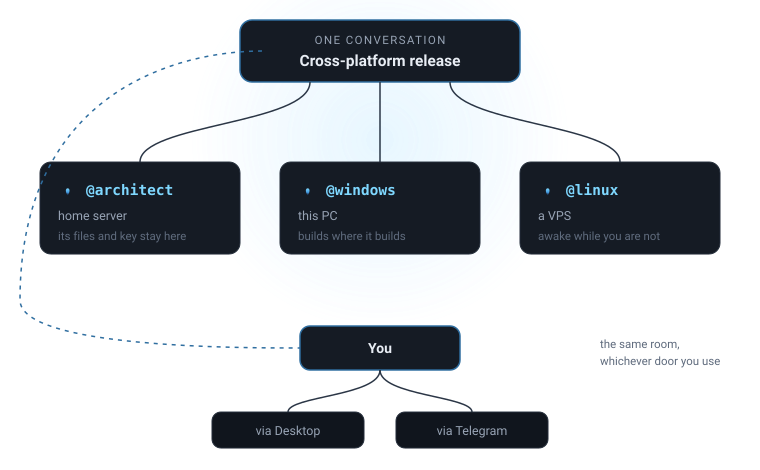

Agents that read files, run commands and do real work — on the computers you own, with the model you choose.
Free and MIT-licensed. No account, no subscription, no cloud component.

What makes this different from a chat window with tools.
Not a thread with one bot. It has participants — you, a colleague, any number of agents. Everyone sees every message; who answers depends on how you address them.
An agent belongs to one node: your laptop, a home server, a VPS. Its workspace, its files and its provider key stay there. The Linux agent runs on Linux because that is where it is.
The desktop app is one door. Telegram is another. A reply typed on a train is your own turn in the same conversation — not a message to a side-channel bot with separate memory.
Add an agent, and a strip shows who is present. Then you simply type.
| You type | What happens |
|---|---|
@coder check the build | Only that agent answers |
@coder @reviewer compare | Both answer, concurrently |
@all what do you think? | Everyone answers |
and the tests? | Continues with whoever you last addressed |
Agents do not reply to each other by default. Two helpful agents answering each other is an unbounded loop that costs real money, so an agent acts because it was addressed. A hard budget stops a long chain to check with you.
Requires Node.js 20 or newer.
# clone and run git clone https://github.com/techartdev/wispcrew cd wispcrew npm install npm run desktop
On first launch open Settings, pick a provider and paste an API key — or choose Ollama or LM Studio and skip the key entirely. If you want to try it for nothing, build.nvidia.com has a free tier.
DeepSeek, OpenAI, Anthropic, Groq, OpenRouter, Ollama, LM Studio, NVIDIA NIM, or any OpenAI-compatible endpoint.
Cron routines, self-scheduled follow-ups and filesystem triggers, run by a background daemon whether or not the window is open.
Every write or command asks first. An agent trusted to run unattended at your desk still asks when the request arrives from your phone — those are different risks.
Self-hosting is a real reason to choose this, so the design assumes models that follow instructions loosely.
The principle: make the wrong choice unavailable rather than discouraged. Measured on Llama 3.3 70B, an agent delegated "what is 3 + 4?" to another agent instead of answering. Three separate prompt edits did not fix it — a tool that is offered gets used — so the tool was withdrawn instead. That costs a strong model nothing and is the difference between working and not on a small one.
Stated here rather than discovered later. This project is young.